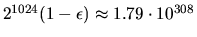

Next: How to Measure Errors
Up: Sources of Error in
Previous: Sources of Error in
Contents
Index
Further Details: Floating Point Arithmetic
Roundoff error is bounded in terms of the machine precision
 ,
which is the smallest value satisfying
,
which is the smallest value satisfying
where a and b are floating-point numbers,
is any one of the four operations +, -, x and ,
and
is the floating-point result of .
Machine epsilon, ,
is the smallest value for which this inequality
is true for all ,
and for all a and b such that
is neither too large (magnitude exceeds the overflow
threshold)
nor too small
(is nonzero with magnitude less than the underflow threshold)
to be represented accurately in the machine.
We also assume
bounds the relative error in unary
operations like square root:
A precise characterization of
depends on the details of the
machine arithmetic and sometimes even of the compiler.
For example, if addition and
subtraction are implemented without a guard digit4.1we must redefine
to be the smallest number
such that
In order to assure portability,
machine parameters such as machine epsilon, the overflow threshold and
underflow threshold are computed at runtime by the auxiliary
routine xLAMCH4.2. The alternative,
keeping a fixed table of machine parameter values, would degrade portability
because the table would have to be changed when moving from one machine,
or even one compiler, to another.
Actually, most machines, but not yet all, do have the same machine
parameters because they implement IEEE Standard Floating Point Arithmetic
[4,5], which exactly specifies floating-point number
representations and operations. For
these machines, including all modern workstations and
PCs4.3,
the values of these parameters are given in
Table 4.1.
Table 4.1:
Values of Machine Parameters in IEEE Floating Point Arithmetic
| Machine parameter |
Single Precision (32 bits) |
Double Precision (64 bits) |
| Machine epsilon
= xLAMCH('E') |
|
|
| Underflow threshold = xLAMCH('U') |
|
 |
| Overflow threshold = xLAMCH('O') |
|
 |
As stated above, we will ignore overflow and underflow in discussing error
bounds. References [24,67] discuss extending error bounds
to include
underflow, and show that for many common computations, when underflow occurs it
is less significant than roundoff. With some important exceptions described below,
overflow usually means that a computation has failed so the error bounds do not apply.
Therefore, most of our error bounds will simply be proportional to machine epsilon.
This means, for example, that if the
same problem in solved in double precision and single precision, the error bound
in double precision will be smaller than the error bound in single precision
by a factor
of
.
In IEEE arithmetic, this
ratio is
,
meaning that one expects the double precision answer to have approximately nine
more decimal digits correct than the single precision answer.
LAPACK routines are generally insensitive to the details of rounding and
exception handling, like their counterparts in LINPACK and EISPACK.
One algorithm, xLASV2,
can return significantly more accurate results if addition and subtraction
have a guard digit, but is still quite accurate if they do not
(see the end of section 4.9).
However, several LAPACK routines do make assumptions about details of
the floating point arithmetic. We list these routines here.
- Infinity and NaN arithmetic. In IEEE arithmetic, there are specific rules
for evaluating quantities like 1/0 and 0/0. Overflowed quantities and
division-by-zero (like 1/0) result in a
symbol, which continues
to propagate through the computation using rules like .
In particular, there is no error message or termination of execution.
Similarly, quantities like 0/0 and
must be replaced by
NaN (the ``Not a Number'' symbol) and propagated as well. See [4,5]
for details. The following LAPACK routines, and the routines that call them,
assume the presence of this infinity and NaN arithmetic for their correct functioning:
- xSTEGR, which computes eigenvalues and eigenvectors of symmetric tridiagonal
matrices. It is called by the drivers for the symmetric and Hermitian
eigenproblems xSYEVR, xHEEVR and xSTEVR.4.4
- Accuracy of add/subtract. If there is a guard digit in addition and
subtraction, or if there is no guard digit but addition and subtraction are
performed in the way they are on the Cray C90, Cray YMP, Cray XMP or Cray 2,
then we can guarantee that the following routines work correctly. (They could
theoretically fail on a hexadecimal or decimal machine without a guard digit,
but we know of no such machine.)
- xSTEDC, which uses divide-and-conquer to find the eigenvalues and eigenvectors
of a symmetric tridiagonal matrix. It is called by all the drivers for
the symmetric, Hermitian, generalized symmetric definite and
generalized Hermitian definite eigenvalue drivers with names ending in -EVD
or -GVD.
- xBDSDC, which uses divide-and-conquer to find the SVD
of a bidiagonal matrix. It is called by xGESDD.
- xLALSD, which uses divide-and-conquer to solve a bidiagonal least squares
problem with the SVD. It is called by xGELSD.
Next: How to Measure Errors
Up: Sources of Error in
Previous: Sources of Error in
Contents
Index
Susan Blackford
1999-10-01